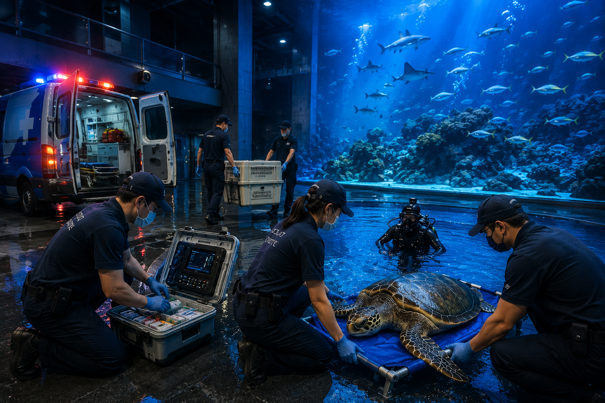
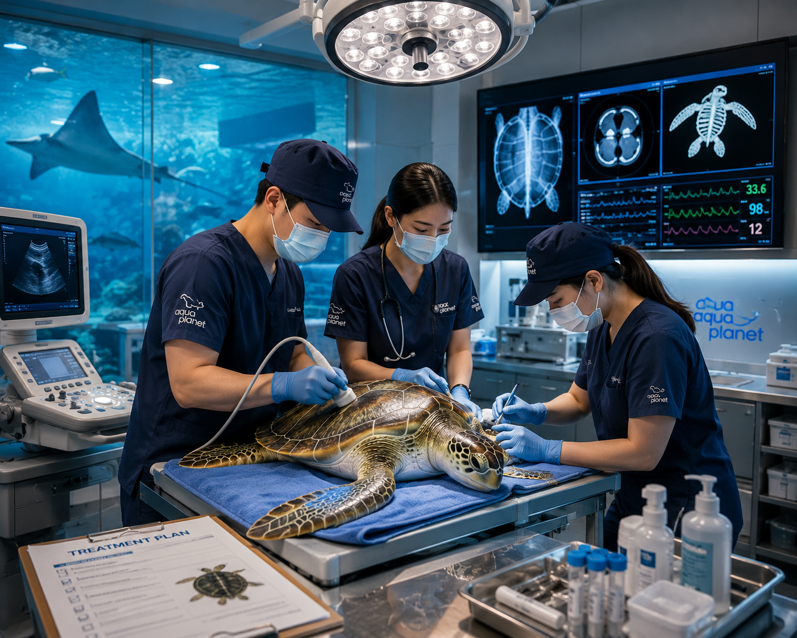
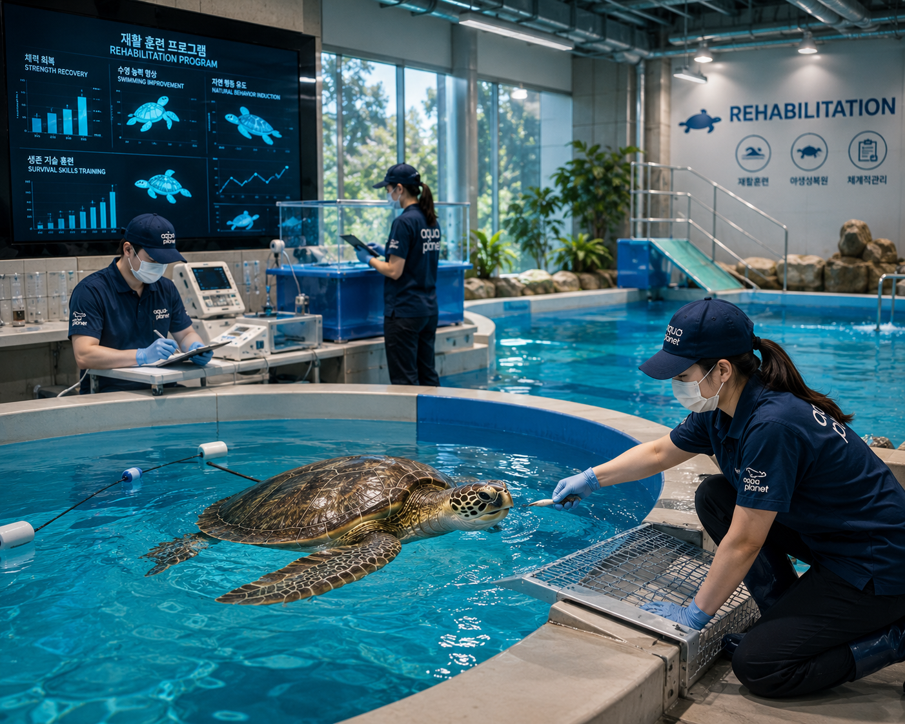
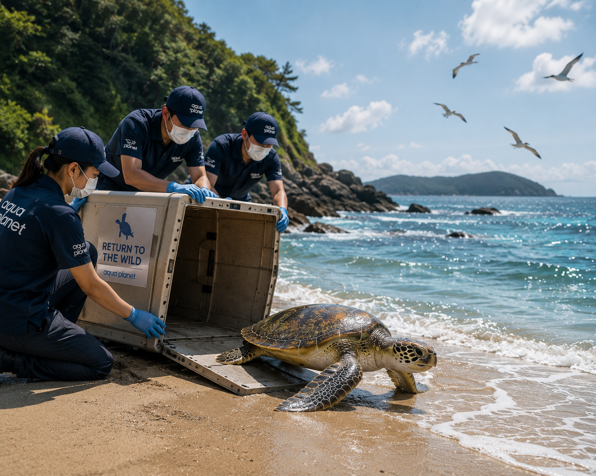

01
RESCUE
생명의 가치를 지키는 긴급 구조 시스템
- 긴급구조
- 현장출동
- 생명보호
- 시설관리

제주의 바다를 닮은 국내 최대 규모 아쿠아리움
아쿠아플라넷은 해양수산부 지정 해양동물전문구조·치료기관으로서 부상 및 조난 해양생물을 구조하고 치료합니다
전문 인력의 보호와 재활
과정을 거쳐 건강하게 바다로 돌아갈 수 있도록 지원합니다

01
생명의 가치를 지키는 긴급 구조 시스템

02
전문 의료진의 정밀 진단과 맞춤형 치유 솔루션

03
야생성 회복을 위한 체계적이고 과학적인 재활 프로그램

04
자연의 품으로 완벽하게 돌아가는 건강한 복귀
제주 바다에서 구조된 돌고래들의 이야기입니다
구조와 치료를 거쳐 다시 바다를 향한 여정을 이어갑니다